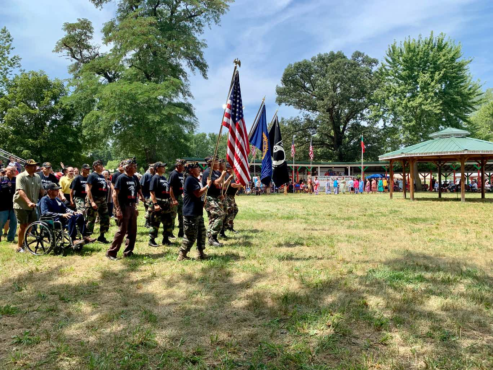
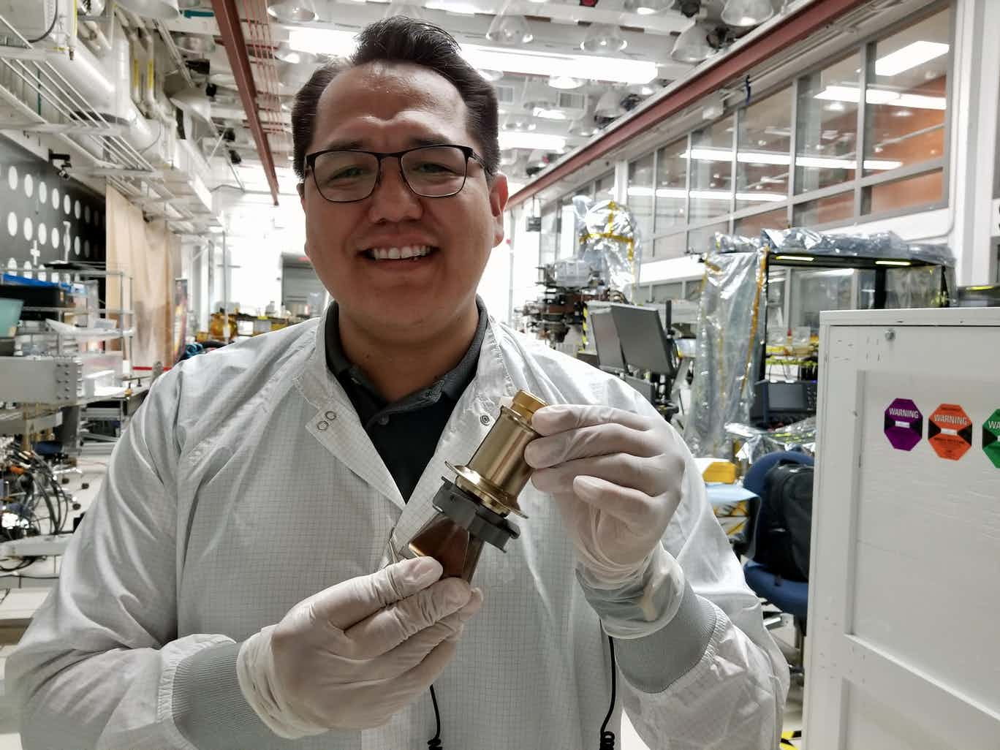
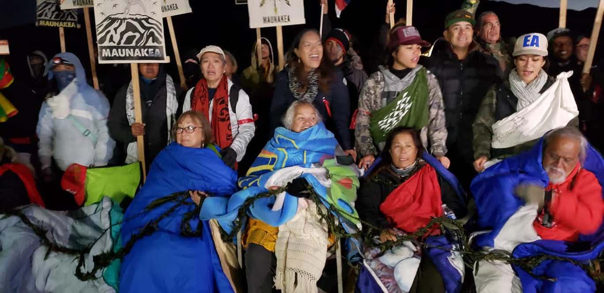
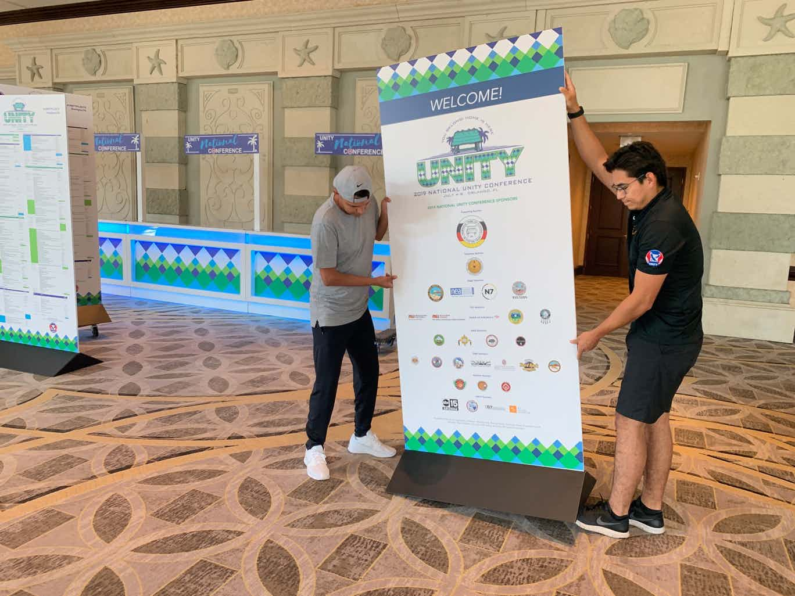

LaDonna Harris remembers what Washington, D.C., was like in the 1960s. Tribal leaders had to travel back and forth across town, meeting in different offices, in order to get business done with the federal government.

Three presidential candidates reached out to powwow goers Saturday and talked about tribal sovereignty, reparations and removing Andrew Jackson from the White House's Oval Office.
Rep. Tulsi Gabbard, D-Hawaii, traveled to North Dakota before taking the stage in Detroit for the Second Democratic debate. It was the 38-year-old’s second visit.

Aaron Yazzie sometimes felt like he was in a “little bubble" growing up on the Navajo Nation reservation in Holbrook, Arizona.

Kanaka Maoli, Native Hawaiians, are peacefully protesting the construction of a Thirty Meter Telescope on their sacred site, Mauna Kea.

More than 2,000 Native youth from across Indian Country have packed their bags and arrived in Orlando. They will attend United National Indian Tribal Youth organization’s signature event, their annual conference, for the next five days.